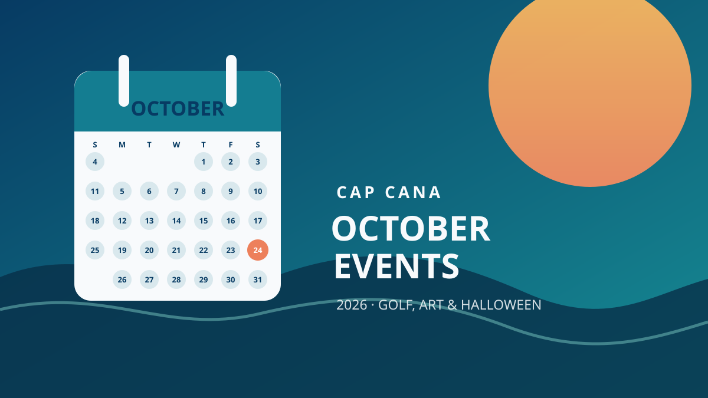
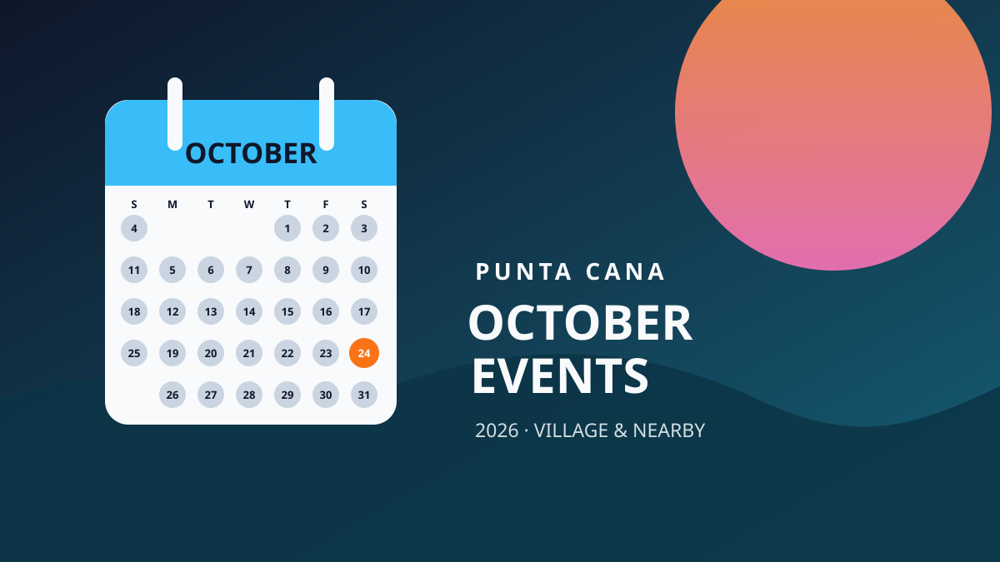
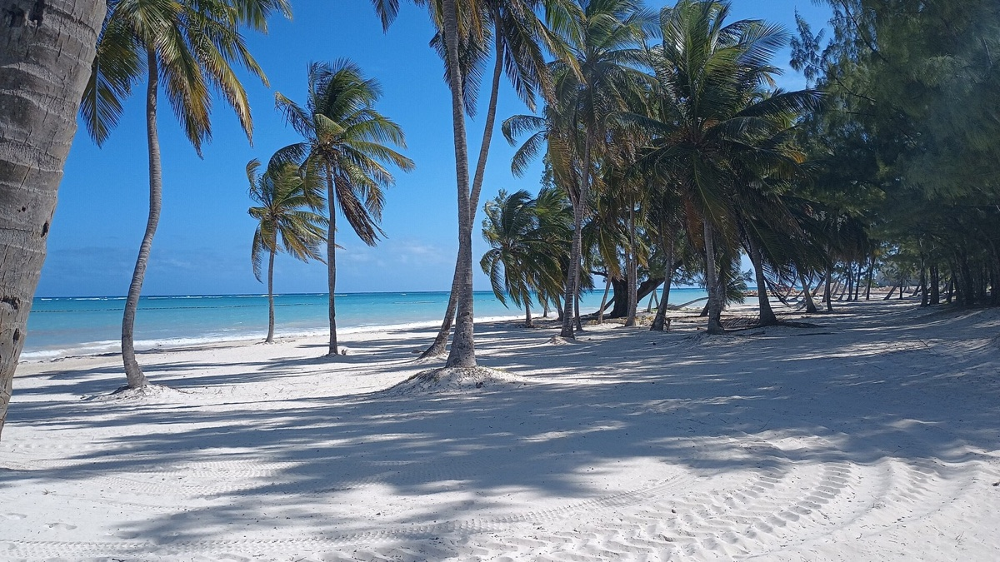
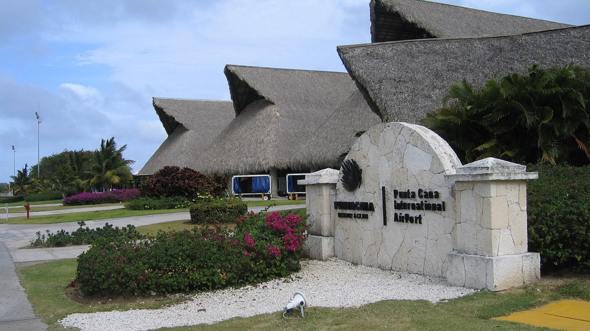
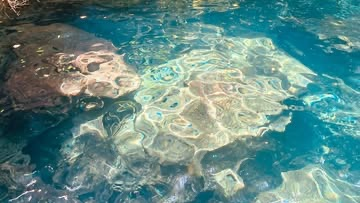

Local calendar
October events in Cap Cana
Golf-weekend activities, art, Halloween fun, and community gatherings around Cap Cana.
Read the roundup →From your hosts
Practical, locally informed ideas to help you choose where to stay, plan beach days, and enjoy more of Punta Cana and Cap Cana at your own pace.

Local calendar
Golf-weekend activities, art, Halloween fun, and community gatherings around Cap Cana.
Read the roundup →
Local calendar
Family activities, live music, markets, and resort events on the October 2026 calendar.
Read the roundup →
Choosing an area
Compare two convenient home bases and choose the one that fits your kind of trip.
Read the guide →
Beach days
A simple guide to calm water, long walks, beach clubs, and easy day trips.
Read the guide →
Arrival made easy
How to choose a comfortable base when keeping airport time short matters.
Read the guide →
Nature escape
Plan a quieter day among forest trails and freshwater lagoons near Cap Cana.
Read the guide →